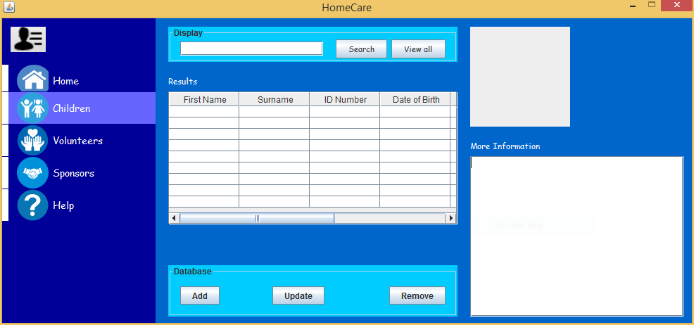

This application allows registered users to login, and cast votes on their prefered SRC running
Candidates. This application also allows leaders from respective running organisations or parties to
add, update or remove participating candidates. I have achieved this by creating a database that
will hold information about the running canditates.
This application allows administrators of the organisation to enter and store information about their
volunteers and sponsors. The application is mainly designed to keep and manage records of the
children cared for by the organisation. The application makes use of database to store the records.
The application makes it is easy for the user to access, modify or remove necessary information from
the database.
×
Information Management System

Technologies Used
Java
SQL
MS Access
My Role
Designed and built the user interface.
Built a local version of the database.
Connected the database to the application.
Project Difficulties
Time Estimation
Underestimated project difficulty
Solution
Broken down tasks to mini tasks so that the workload was not overwhelming
Timed myself appropriately - given each task a time frame for completion
but also included buffer time.
This meant giving 30 minutes to 20 minutes tasks
incase of any disturbance or circumstances that may occur.
Notable Features
Login for different user types
Adding, removing children, volunteers and sponsors to the system
The prediction of whether or not a customer will eventually make a purchase while using an online
shopping portal is made based on the pattern of pages visited on the website by the customer, along
with certain analytical features, the time of the week and year and other features. Machine learning
tacniques such as Logistic regression, Neural Networks and Support vector machines are used together
to produce the best prediction.
I am a solution-orientated developer with a strong
foundation of software development life cycle, project management principles and the design
thinking
process. I am proficient in a number of languages and platforms, with an ability and eagerness
to
learn new technologies and skills. I have a solid knowledge of databases, common data structures
and
algorithms.
Some of my skills include;
Working knowledge of fundamental networking principles
The ability to work well within a team
Good knowledge of working with version control tools such as Git.